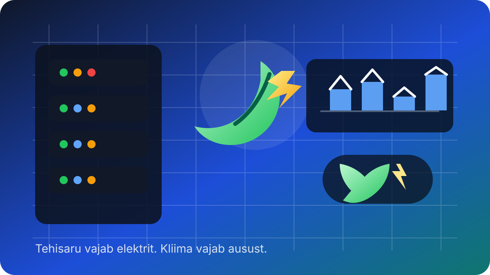

Tehisaru sööb suurte tehnoloogiafirmade kliimaeesmärke

Tehisaru lubab küll kiiremat otsimist ja näiliselt nutikamat maailma, aga selle all olev taristu neelab elektrit nagu väike linn. AP kirjutab, et just see on hakanud suurte tehnoloogiafirmade kliimaeesmärke kõigutama.
Google, Microsoft, Amazon ja Meta lubasid aastate alguses suuri heite vähendamise sihte. Nüüd tunnistavad nad üha sagedamini, et tehisaru jaoks kerkivad andmekeskused võivad vajada rohkem energiat, kui ilusad lubadused alguses eeldasid. Ja kui vaja on kiiresti võimsust juurde, on maagaas kahjuks ikka veel käepärasem kui päikeseline ideaal.
AP andmetel kasvasid Google’i heited ligi 50%, Amazoni omad 33%, Microsofti omad üle 23% ja Meta omad üle 60%. Üle 4,6% USA elektrist kulus 2024. aastal juba andmekeskustele ning mõne prognoosi järgi võib see osakaal 2028. aastaks peaaegu kolmekordistuda. Pilv, mis peaks olema kerge, osutub jälle väga maiseks.
Ettevõtted räägivad endiselt energiatõhususest, taastuvenergia ostmisest ja tarnijate survestamisest. See kõik on tore, aga kui uus tehisarubuum sunnib samal ajal juurde ehitama fossiilseid tagatubasid, siis pole kliimaprintsiibid enam põhimõte, vaid powerpoint.
Loe algallikat: AP News – "Tehisaru tõus muudab suurte tehnoloogiafirmade kliimaeesmärgid keerukamaks"
selle artikli sisu sõnastatud AI poolt: (mudel gpt-5.4-mini)